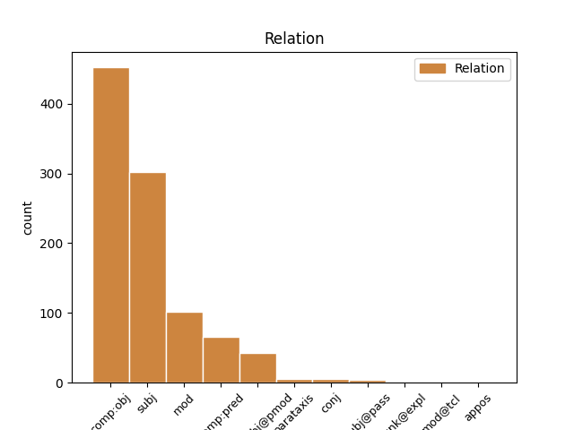
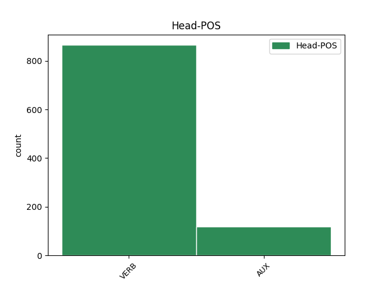
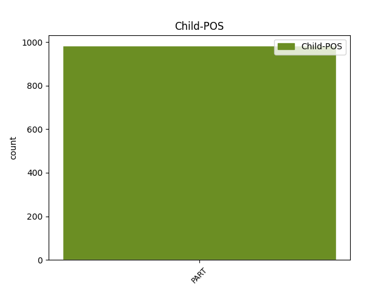

Distribution of features within this leaf



Agreement Rules sorted by frequency.
When the head token is VERB and the dependent token is PART.
1 Spiritual _ _ _ _ 0 _ _ _
2 , _ _ _ _ 0 _ _ _
3 ironic _ _ _ _ 0 _ _ _
4 , _ _ _ _ 0 _ _ _
5 dar _ _ _ _ 0 _ _ _
6 foarte _ _ _ _ 0 _ _ _
7 binevoitor _ _ _ _ 0 _ _ _
8 întotdeauna _ _ _ _ 0 _ _ _
9 , _ _ _ _ 0 _ _ _
10 căuta _ _ _ _ 0 _ _ _
11 să _ _ _ _ 0 _ _ _
12 -și _ _ _ _ 0 _ _ _
13 ajute ajuta VERB Vmsp3 Mood=Sub|Person=3|Tense=Pres|VerbForm=Fin 0 _ _ _
14 elevii _ _ _ _ 0 _ _ _
15 să să PART Qs Mood=Sub 13 mod _ _
16 obțină _ _ _ _ 0 _ _ _
17 note _ _ _ _ 0 _ _ _
18 cât _ _ _ _ 0 _ _ _
19 mai _ _ _ _ 0 _ _ _
20 bune _ _ _ _ 0 _ _ _
21 . _ _ _ _ 0 _ _ _
When the head token is AUX and the dependent token is PART.
1 ( _ _ _ _ 0 _ _ _
2 7 _ _ _ _ 0 _ _ _
3 ) _ _ _ _ 0 _ _ _
4 Ar _ _ _ _ 0 _ _ _
5 trebui _ _ _ _ 0 _ _ _
6 să să PART Qs Mood=Sub 7 comp:obj _ _
7 fie fi AUX Vasp3 Mood=Sub|Person=3|Tense=Pres|VerbForm=Fin 0 _ _ _
8 fixat _ _ _ _ 0 _ _ _
9 un _ _ _ _ 0 _ _ _
10 plafon _ _ _ _ 0 _ _ _
11 indicativ _ _ _ _ 0 _ _ _
12 pentru _ _ _ _ 0 _ _ _
13 alocările _ _ _ _ 0 _ _ _
14 disponibile _ _ _ _ 0 _ _ _
15 destinate _ _ _ _ 0 _ _ _
16 acțiunilor _ _ _ _ 0 _ _ _
17 unui _ _ _ _ 0 _ _ _
18 singur _ _ _ _ 0 _ _ _
19 stat _ _ _ _ 0 _ _ _
20 membru _ _ _ _ 0 _ _ _
21 . _ _ _ _ 0 _ _ _
Disagree Examples:
1 Din _ _ _ _ 0 _ _ _
2 cauza _ _ _ _ 0 _ _ _
3 atmosferei _ _ _ _ 0 _ _ _
4 de _ _ _ _ 0 _ _ _
5 gazon _ _ _ _ 0 _ _ _
6 de _ _ _ _ 0 _ _ _
7 hochei _ _ _ _ 0 _ _ _
8 și _ _ _ _ 0 _ _ _
9 de _ _ _ _ 0 _ _ _
10 băi _ _ _ _ 0 _ _ _
11 reci _ _ _ _ 0 _ _ _
12 și _ _ _ _ 0 _ _ _
13 de _ _ _ _ 0 _ _ _
14 excursii _ _ _ _ 0 _ _ _
15 în _ _ _ _ 0 _ _ _
16 grup _ _ _ _ 0 _ _ _
17 și _ _ _ _ 0 _ _ _
18 în _ _ _ _ 0 _ _ _
19 general _ _ _ _ 0 _ _ _
20 de _ _ _ _ 0 _ _ _
21 castitate _ _ _ _ 0 _ _ _
22 pe _ _ _ _ 0 _ _ _
23 care _ _ _ _ 0 _ _ _
24 reușea reuși VERB Vmii3s Mood=Ind|Number=Sing|Person=3|Tense=Imp|VerbForm=Fin 0 _ _ _
25 s- să PART Qs-y Mood=Sub|Variant=Short 24 comp:obj _ SpaceAfter=No
26 o _ _ _ _ 0 _ _ _
27 creeze _ _ _ _ 0 _ _ _
28 în _ _ _ _ 0 _ _ _
29 jurul _ _ _ _ 0 _ _ _
30 ei _ _ _ _ 0 _ _ _
31 . _ _ _ _ 0 _ _ _
1 Aparatul _ _ _ _ 0 _ _ _
2 care _ _ _ _ 0 _ _ _
3 se _ _ _ _ 0 _ _ _
4 numea _ _ _ _ 0 _ _ _
5 tele-ecran _ _ _ _ 0 _ _ _
6 , _ _ _ _ 0 _ _ _
7 putea _ _ _ _ 0 _ _ _
8 fi _ _ _ _ 0 _ _ _
9 dat _ _ _ _ 0 _ _ _
10 mai _ _ _ _ 0 _ _ _
11 încet _ _ _ _ 0 _ _ _
12 , _ _ _ _ 0 _ _ _
13 dar _ _ _ _ 0 _ _ _
14 nu _ _ _ _ 0 _ _ _
15 aveai avea VERB Vmii2s Mood=Ind|Number=Sing|Person=2|Tense=Imp|VerbForm=Fin 0 _ _ _
16 cum _ _ _ _ 0 _ _ _
17 să să PART Qs Mood=Sub 15 comp:obj _ SpaceAfter=No
18 -l _ _ _ _ 0 _ _ _
19 închizi _ _ _ _ 0 _ _ _
20 de _ _ _ _ 0 _ _ _
21 tot _ _ _ _ 0 _ _ _
22 . _ _ _ _ 0 _ _ _
1 Winston _ _ _ _ 0 _ _ _
2 nu _ _ _ _ 0 _ _ _
3 făcuse _ _ _ _ 0 _ _ _
4 niciodată _ _ _ _ 0 _ _ _
5 nici _ _ _ _ 0 _ _ _
6 cel _ _ _ _ 0 _ _ _
7 mai _ _ _ _ 0 _ _ _
8 mic _ _ _ _ 0 _ _ _
9 efort _ _ _ _ 0 _ _ _
10 de _ _ _ _ 0 _ _ _
11 a _ _ _ _ 0 _ _ _
12 -și _ _ _ _ 0 _ _ _
13 verifica _ _ _ _ 0 _ _ _
14 presupunerea _ _ _ _ 0 _ _ _
15 : _ _ _ _ 0 _ _ _
16 fiindcă _ _ _ _ 0 _ _ _
17 , _ _ _ _ 0 _ _ _
18 într-adevăr _ _ _ _ 0 _ _ _
19 , _ _ _ _ 0 _ _ _
20 nici _ _ _ _ 0 _ _ _
21 nu _ _ _ _ 0 _ _ _
22 avea avea VERB Vmii3s Mood=Ind|Number=Sing|Person=3|Tense=Imp|VerbForm=Fin 0 _ _ _
23 cum _ _ _ _ 0 _ _ _
24 să să PART Qs Mood=Sub 22 comp:obj _ _
25 facă _ _ _ _ 0 _ _ _
26 așa _ _ _ _ 0 _ _ _
27 ceva _ _ _ _ 0 _ _ _
28 . _ _ _ _ 0 _ _ _
1 În _ _ _ _ 0 _ _ _
2 momentul _ _ _ _ 0 _ _ _
3 când _ _ _ _ 0 _ _ _
4 intrase _ _ _ _ 0 _ _ _
5 , _ _ _ _ 0 _ _ _
6 O'Brien _ _ _ _ 0 _ _ _
7 se _ _ _ _ 0 _ _ _
8 uitase _ _ _ _ 0 _ _ _
9 la _ _ _ _ 0 _ _ _
10 ceas _ _ _ _ 0 _ _ _
11 și _ _ _ _ 0 _ _ _
12 , _ _ _ _ 0 _ _ _
13 văzând _ _ _ _ 0 _ _ _
14 că _ _ _ _ 0 _ _ _
15 era _ _ _ _ 0 _ _ _
16 aproape _ _ _ _ 0 _ _ _
17 ora _ _ _ _ 0 _ _ _
18 unsprezece _ _ _ _ 0 _ _ _
19 se _ _ _ _ 0 _ _ _
20 hotărâse hotărî VERB Vmil3s Mood=Ind|Number=Sing|Person=3|Tense=Pqp|VerbForm=Fin 0 _ _ _
21 , _ _ _ _ 0 _ _ _
22 în _ _ _ _ 0 _ _ _
23 mod _ _ _ _ 0 _ _ _
24 evident _ _ _ _ 0 _ _ _
25 , _ _ _ _ 0 _ _ _
26 să să PART Qs Mood=Sub 20 comp:obj _ _
27 rămână _ _ _ _ 0 _ _ _
28 la _ _ _ _ 0 _ _ _
29 Secția _ _ _ _ 0 _ _ _
30 Documente _ _ _ _ 0 _ _ _
31 pentru _ _ _ _ 0 _ _ _
32 cele _ _ _ _ 0 _ _ _
33 Două _ _ _ _ 0 _ _ _
34 Minute _ _ _ _ 0 _ _ _
35 de _ _ _ _ 0 _ _ _
36 Ură _ _ _ _ 0 _ _ _
37 . _ _ _ _ 0 _ _ _
1 Înainte _ _ _ _ 0 _ _ _
2 de _ _ _ _ 0 _ _ _
3 a _ _ _ _ 0 _ _ _
4 se _ _ _ _ 0 _ _ _
5 fi _ _ _ _ 0 _ _ _
6 scurs _ _ _ _ 0 _ _ _
7 treizeci _ _ _ _ 0 _ _ _
8 de _ _ _ _ 0 _ _ _
9 secunde _ _ _ _ 0 _ _ _
10 de _ _ _ _ 0 _ _ _
11 Ură _ _ _ _ 0 _ _ _
12 , _ _ _ _ 0 _ _ _
13 jumătate _ _ _ _ 0 _ _ _
14 din _ _ _ _ 0 _ _ _
15 lumea _ _ _ _ 0 _ _ _
16 din _ _ _ _ 0 _ _ _
17 sală _ _ _ _ 0 _ _ _
18 începuse începe VERB Vmil3s Mood=Ind|Number=Sing|Person=3|Tense=Pqp|VerbForm=Fin 0 _ _ _
19 să să PART Qs Mood=Sub 18 comp:obj _ _
20 aibă _ _ _ _ 0 _ _ _
21 manifestări _ _ _ _ 0 _ _ _
22 necontrolate _ _ _ _ 0 _ _ _
23 de _ _ _ _ 0 _ _ _
24 furie _ _ _ _ 0 _ _ _
25 . _ _ _ _ 0 _ _ _